3. Surface Albedos¶
3.1. Canopy Radiative Transfer¶
Radiative transfer within vegetative canopies is calculated from the two-stream approximation of Dickinson (1983) and Sellers (1985) as described by Bonan (1996)
(1)¶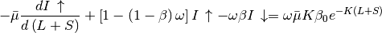
(2)¶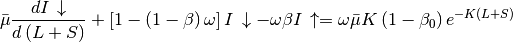
where 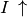 and 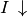 are the upward
and downward diffuse radiative fluxes per unit incident flux,
 is the optical depth of direct beam per unit leaf and stem area,
is the optical depth of direct beam per unit leaf and stem area,
 is the cosine of the zenith angle of the incident beam,
is the cosine of the zenith angle of the incident beam,
 is the relative projected area of leaf and
stem elements in the direction 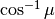 ,
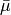 is the average inverse diffuse optical depth per unit
leaf and stem area, is a scattering coefficient,
is the relative projected area of leaf and
stem elements in the direction 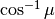 ,
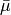 is the average inverse diffuse optical depth per unit
leaf and stem area, is a scattering coefficient,
 and 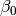 are upscatter parameters for
diffuse and direct beam radiation, respectively,
and 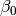 are upscatter parameters for
diffuse and direct beam radiation, respectively,  is the
exposed leaf area index (section 2.1.4), and
is the
exposed leaf area index (section 2.1.4), and  is the exposed
stem area index (section 2.1.4). Given the direct beam albedo
is the exposed
stem area index (section 2.1.4). Given the direct beam albedo
 and diffuse albedo
and diffuse albedo
 of the ground (section 3.2), these
equations are solved to calculate the fluxes, per unit incident flux,
absorbed by the vegetation, reflected by the vegetation, and transmitted
through the vegetation for direct and diffuse radiation and for visible
(
of the ground (section 3.2), these
equations are solved to calculate the fluxes, per unit incident flux,
absorbed by the vegetation, reflected by the vegetation, and transmitted
through the vegetation for direct and diffuse radiation and for visible
( 0.7
0.7 ) and near-infrared
(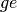 0.7) wavebands. The absorbed
radiation is partitioned to sunlit and shaded fractions of the canopy.
The optical parameters , ,
, , and are calculated
based on work in Sellers (1985) as follows.
) and near-infrared
(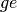 0.7) wavebands. The absorbed
radiation is partitioned to sunlit and shaded fractions of the canopy.
The optical parameters , ,
, , and are calculated
based on work in Sellers (1985) as follows.
The relative projected area of leaves and stems in the direction is
(3)¶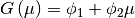
where 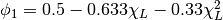 and 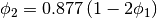 for 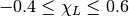. 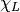 is the departure of leaf angles from a random distribution and equals +1 for horizontal leaves, 0 for random leaves, and –1 for vertical leaves.
The average inverse diffuse optical depth per unit leaf and stem area is
(4)¶![\bar{\mu }=\int _{0}^{1}\frac{\mu '}{G\left(\mu '\right)} d\mu '=\frac{1}{\phi _{2} } \left[1-\frac{\phi _{1} }{\phi _{2} } \ln \left(\frac{\phi _{1} +\phi _{2} }{\phi _{1} } \right)\right]](../../_images/math/6aff45d53f390954bd7840b0f17a81e69d29b3ff.png)
where  is the direction of the scattered flux.
is the direction of the scattered flux.
The optical parameters , , and , which vary with wavelength ( ), are
weighted combinations of values for vegetation and snow. The model determines that snow is on the canopy if 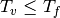 , where
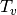 is the vegetation temperature (K) (Chapter 5) and
), are
weighted combinations of values for vegetation and snow. The model determines that snow is on the canopy if 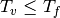 , where
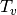 is the vegetation temperature (K) (Chapter 5) and  is the freezing temperature of water (K) (Table 2.6). In
this case, the optical parameters are
is the freezing temperature of water (K) (Table 2.6). In
this case, the optical parameters are
(5)¶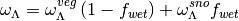
(6)¶
(7)¶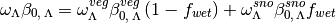
where 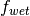 is the wetted fraction of the canopy (section 7.1). The snow and vegetation weights are applied to the products
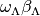 and  because these
products are used in the two-stream equations. If there is no snow on the canopy,
because these
products are used in the two-stream equations. If there is no snow on the canopy,
(8)¶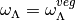
(9)¶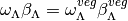
(10)¶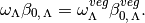
For vegetation, 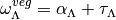 . 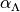 is a weighted combination of the leaf and stem reflectances (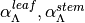 )
(11)¶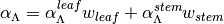
where 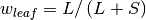 and 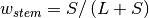 . 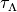 is a weighted combination of the leaf and stem transmittances (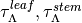)
(12)¶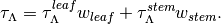
The upscatter for diffuse radiation is
(13)¶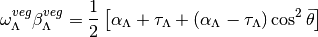
where 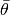 is the mean leaf inclination angle relative to the horizontal plane (i.e., the angle between leaf normal and local vertical) (Sellers 1985). Here, 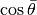 is approximated by
(14)¶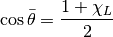
Using this approximation, for vertical leaves (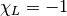,
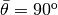 ),
 ,
and for horizontal leaves (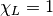,
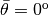 ) ,
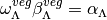 ,
which agree with both Dickinson (1983) and Sellers (1985). For random
(spherically distributed) leaves (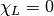,
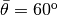 ), the approximation yields
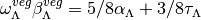
whereas the approximate solution of Dickinson (1983) is
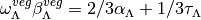 .
This discrepancy arises from the fact that a spherical leaf angle
distribution has a true mean leaf inclination
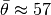 (Campbell and Norman 1998) in equation ,
while 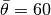 in equation . The upscatter for direct
beam radiation is
,
and for horizontal leaves (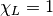,
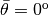 ) ,
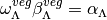 ,
which agree with both Dickinson (1983) and Sellers (1985). For random
(spherically distributed) leaves (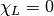,
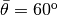 ), the approximation yields
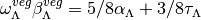
whereas the approximate solution of Dickinson (1983) is
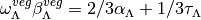 .
This discrepancy arises from the fact that a spherical leaf angle
distribution has a true mean leaf inclination
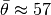 (Campbell and Norman 1998) in equation ,
while 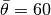 in equation . The upscatter for direct
beam radiation is
(15)¶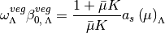
where the single scattering albedo is
(16)¶![\begin{array}{rcl} {a_{s} \left(\mu \right)_{\Lambda } } & {=} & {\frac{\omega _{\Lambda }^{veg} }{2} \int _{0}^{1}\frac{\mu 'G\left(\mu \right)}{\mu G\left(\mu '\right)+\mu 'G\left(\mu \right)} d\mu '} \\ {} & {=} & {\frac{\omega _{\Lambda }^{veg} }{2} \frac{G\left(\mu \right)}{\mu \phi _{2} +G\left(\mu \right)} \left[1-\frac{\mu \phi _{1} }{\mu \phi _{2} +G\left(\mu \right)} \ln \left(\frac{\mu \phi _{1} +\mu \phi _{2} +G\left(\mu \right)}{\mu \phi _{1} } \right)\right].} \end{array}](../../_images/math/35d9ffe47760af92e59a38896e6af062a297fe1d.png)
The upward diffuse fluxes per unit incident direct beam and diffuse flux (i.e., the surface albedos) are
(17)¶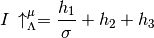
(18)¶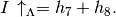
The downward diffuse fluxes per unit incident direct beam and diffuse radiation, respectively, are
(19)¶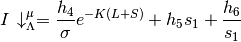
(20)¶
With reference to Figure 4.1, the direct beam flux transmitted through
the canopy, per unit incident flux, is  ,
and the direct beam and diffuse fluxes absorbed by the vegetation, per
unit incident flux, are
,
and the direct beam and diffuse fluxes absorbed by the vegetation, per
unit incident flux, are
(21)¶
(22)¶
These fluxes are partitioned to the sunlit and shaded canopy using an analytical solution to the two-stream approximation for sunlit and shaded leaves (Dai et al. 2004), as described by Bonan et al. (2011). The absorption of direct beam radiation by sunlit leaves is
(23)¶
and for shaded leaves is
(24)¶
with
(25)¶
(26)¶
For diffuse radiation, the absorbed radiation for sunlit leaves is
(27)¶
and for shaded leaves is
(28)¶
with
(29)¶
(30)¶![a_{2} =h_{9} \left[\frac{1-s_{2} s_{1} }{K+h} \right]+h_{10} \left[\frac{1-{s_{2} \mathord{\left/ {\vphantom {s_{2} s_{1} }} \right. \kern-\nulldelimiterspace} s_{1} } }{K-h} \right].](../../_images/math/b072961f11572fd65cc51b21b5408f4709238b7c.png)
The parameters – ,  ,
,
 , , and are from Sellers (1985)
[note the error in in Sellers (1985)]:
, , and are from Sellers (1985)
[note the error in in Sellers (1985)]:
(31)¶
(32)¶
(33)¶
(34)¶
(35)¶
(36)¶
(37)¶
(38)¶
(39)¶
(40)¶
(41)¶
(42)¶
(43)¶
(44)¶
(45)¶
(46)¶
(47)¶
(48)¶
(49)¶
(50)¶
(51)¶
(52)¶
(53)¶
(54)¶
(55)¶
(56)¶
(57)¶
Plant functional type optical properties (Table 3.1) for trees and shrubs are from Dorman and Sellers (1989). Leaf and stem optical properties (placeVIS and NIR reflectance and transmittance) were derived for grasslands and crops from full optical range spectra of measured optical properties (Asner et al. 1998). Optical properties for intercepted snow (Table 3.2) are from Sellers et al. (1986).
Table 3.1. Plant functional type optical properties
| Plant Functional Type | |||||||||
|---|---|---|---|---|---|---|---|---|---|
| NET Temperate | 0.01 | 0.07 | 0.35 | 0.16 | 0.39 | 0.05 | 0.10 | 0.001 | 0.001 |
| NET Boreal | 0.01 | 0.07 | 0.35 | 0.16 | 0.39 | 0.05 | 0.10 | 0.001 | 0.001 |
| NDT Boreal | 0.01 | 0.07 | 0.35 | 0.16 | 0.39 | 0.05 | 0.10 | 0.001 | 0.001 |
| BET Tropical | 0.10 | 0.10 | 0.45 | 0.16 | 0.39 | 0.05 | 0.25 | 0.001 | 0.001 |
| BET temperate | 0.10 | 0.10 | 0.45 | 0.16 | 0.39 | 0.05 | 0.25 | 0.001 | 0.001 |
| BDT tropical | 0.01 | 0.10 | 0.45 | 0.16 | 0.39 | 0.05 | 0.25 | 0.001 | 0.001 |
| BDT temperate | 0.25 | 0.10 | 0.45 | 0.16 | 0.39 | 0.05 | 0.25 | 0.001 | 0.001 |
| BDT boreal | 0.25 | 0.10 | 0.45 | 0.16 | 0.39 | 0.05 | 0.25 | 0.001 | 0.001 |
| BES temperate | 0.01 | 0.07 | 0.35 | 0.16 | 0.39 | 0.05 | 0.10 | 0.001 | 0.001 |
| BDS temperate | 0.25 | 0.10 | 0.45 | 0.16 | 0.39 | 0.05 | 0.25 | 0.001 | 0.001 |
| BDS boreal | 0.25 | 0.10 | 0.45 | 0.16 | 0.39 | 0.05 | 0.25 | 0.001 | 0.001 |
| C3 arctic grass | -0.30 | 0.11 | 0.35 | 0.31 | 0.53 | 0.05 | 0.34 | 0.120 | 0.250 |
| C3 grass | -0.30 | 0.11 | 0.35 | 0.31 | 0.53 | 0.05 | 0.34 | 0.120 | 0.250 |
| C4 grass | -0.30 | 0.11 | 0.35 | 0.31 | 0.53 | 0.05 | 0.34 | 0.120 | 0.250 |
| Crop R | -0.30 | 0.11 | 0.35 | 0.31 | 0.53 | 0.05 | 0.34 | 0.120 | 0.250 |
| Crop I | -0.30 | 0.11 | 0.35 | 0.31 | 0.53 | 0.05 | 0.34 | 0.120 | 0.250 |
| Corn R | -0.50 | 0.11 | 0.35 | 0.31 | 0.53 | 0.05 | 0.34 | 0.120 | 0.250 |
| Corn I | -0.50 | 0.11 | 0.35 | 0.31 | 0.53 | 0.05 | 0.34 | 0.120 | 0.250 |
| Temp Cereal R | 0.65 | 0.11 | 0.35 | 0.31 | 0.53 | 0.05 | 0.34 | 0.120 | 0.250 |
| Temp Cereal I | 0.65 | 0.11 | 0.35 | 0.31 | 0.53 | 0.05 | 0.34 | 0.120 | 0.250 |
| Winter Cereal R | 0.65 | 0.11 | 0.35 | 0.31 | 0.53 | 0.05 | 0.34 | 0.120 | 0.250 |
| Winter Cereal I | 0.65 | 0.11 | 0.35 | 0.31 | 0.53 | 0.05 | 0.34 | 0.120 | 0.250 |
| Soybean R | -0.5 | 0.11 | 0.35 | 0.31 | 0.53 | 0.05 | 0.34 | 0.120 | 0.250 |
| Soybean I | -0.5 | 0.11 | 0.35 | 0.31 | 0.53 | 0.05 | 0.34 | 0.120 | 0.250 |
Table 3.2. Intercepted snow optical properties
| Parameter | vis | nir |
|---|---|---|
| 0.8 | 0.4 | |
| 0.5 | 0.5 | |
| 0.5 | 0.5 |
3.2. Ground Albedos¶
The overall direct beam and diffuse ground albedos are weighted
combinations of “soil” and snow albedos
(58)¶
(59)¶
where  is the fraction of the ground covered with snow (section 7.2.1).
is the fraction of the ground covered with snow (section 7.2.1).
and vary with glacier, lake, wetland, and soil surfaces. Glacier albedos are from Paterson (1994)
Unfrozen lake and wetland albedos depend on the cosine of the solar
zenith angle
(60)¶
Frozen lake and wetland albedos are from NCAR LSM (Bonan 1996)
As in NCAR LSM (Bonan 1996), soil albedos vary with color class
(61)¶
where  depends on the volumetric water content of the
first soil layer (section 7.4) as
, and
and
are albedos for saturated and dry
soil color classes (Table 3.3).
depends on the volumetric water content of the
first soil layer (section 7.4) as
, and
and
are albedos for saturated and dry
soil color classes (Table 3.3).
CLM soil colors are prescribed so that they best reproduce observed MODIS local solar noon surface albedo values at the CLM grid cell following the methods of Lawrence and Chase (2007). The soil colors are fitted over the range of 20 soil classes shown in Table 3.3 and compared to the MODIS monthly local solar noon all-sky surface albedo as described in Strahler et al. (1999) and Schaaf et al. (2002). The CLM two-stream radiation model was used to calculate the model equivalent surface albedo using climatological monthly soil moisture along with the vegetation parameters of PFT fraction, LAI, and SAI. The soil color that produced the closest all-sky albedo in the two-stream radiation model was selected as the best fit for the month. The fitted monthly soil colors were averaged over all snow-free months to specify a representative soil color for the grid cell. In cases where there was no snow-free surface albedo for the year, the soil color derived from snow-affected albedo was used to give a representative soil color that included the effects of the minimum permanent snow cover.
Table 3.3. Dry and saturated soil albedos
| Color Class | vis | nir | vis | nir | Color Class | vis | nir | vis | nir |
| 1 | 0.36 | 0.61 | 0.25 | 0.50 | 11 | 0.24 | 0.37 | 0.13 | 0.26 |
| 2 | 0.34 | 0.57 | 0.23 | 0.46 | 12 | 0.23 | 0.35 | 0.12 | 0.24 |
| 3 | 0.32 | 0.53 | 0.21 | 0.42 | 13 | 0.22 | 0.33 | 0.11 | 0.22 |
| 4 | 0.31 | 0.51 | 0.20 | 0.40 | 14 | 0.20 | 0.31 | 0.10 | 0.20 |
| 5 | 0.30 | 0.49 | 0.19 | 0.38 | 15 | 0.18 | 0.29 | 0.09 | 0.18 |
| 6 | 0.29 | 0.48 | 0.18 | 0.36 | 16 | 0.16 | 0.27 | 0.08 | 0.16 |
| 7 | 0.28 | 0.45 | 0.17 | 0.34 | 17 | 0.14 | 0.25 | 0.07 | 0.14 |
| 8 | 0.27 | 0.43 | 0.16 | 0.32 | 18 | 0.12 | 0.23 | 0.06 | 0.12 |
| 9 | 0.26 | 0.41 | 0.15 | 0.30 | 19 | 0.10 | 0.21 | 0.05 | 0.10 |
| 10 | 0.25 | 0.39 | 0.14 | 0.28 | 20 | 0.08 | 0.16 | 0.04 | 0.08 |
3.2.1. Snow Albedo¶
Snow albedo and solar absorption within each snow layer are simulated with the Snow, Ice, and Aerosol Radiative Model (SNICAR), which incorporates a two-stream radiative transfer solution from Toon et al. (1989). Albedo and the vertical absorption profile depend on solar zenith angle, albedo of the substrate underlying snow, mass concentrations of atmospheric-deposited aerosols (black carbon, mineral dust, and organic carbon), and ice effective grain size (), which is simulated with a snow aging routine described in section 3.2.3. Representation of impurity mass concentrations within the snowpack is described in section 7.2.4. Implementation of SNICAR in CLM is also described somewhat by Flanner and Zender (2005) and Flanner et al. (2007).
The two-stream solution requires the following bulk optical properties
for each snow layer and spectral band: extinction optical depth
( ), single-scatter albedo (), and
scattering asymmetry parameter (g). The snow layers used for radiative
calculations are identical to snow layers applied elsewhere in CLM,
except for the case when snow mass is greater than zero but no snow
layers exist. When this occurs, a single radiative layer is specified to
have the column snow mass and an effective grain size of freshly-fallen
snow (section 3.2.3). The bulk optical properties are weighted functions
of each constituent k, computed for each snow layer and spectral band
as
), single-scatter albedo (), and
scattering asymmetry parameter (g). The snow layers used for radiative
calculations are identical to snow layers applied elsewhere in CLM,
except for the case when snow mass is greater than zero but no snow
layers exist. When this occurs, a single radiative layer is specified to
have the column snow mass and an effective grain size of freshly-fallen
snow (section 3.2.3). The bulk optical properties are weighted functions
of each constituent k, computed for each snow layer and spectral band
as
(62)¶
(63)¶
(64)¶
For each constituent (ice, two black carbon species, two organic carbon species, and four dust species), , g, and
the mass extinction cross-section  (m2 kg-1)
are computed offline with Mie Theory, e.g., applying the computational technique from Bohren and Huffman (1983). The
extinction optical depth for each constituent depends on its mass extinction cross-section and layer mass, (kgm-1) as
(m2 kg-1)
are computed offline with Mie Theory, e.g., applying the computational technique from Bohren and Huffman (1983). The
extinction optical depth for each constituent depends on its mass extinction cross-section and layer mass, (kgm-1) as
(65)¶
The two-stream solution (Toon et al. 1989) applies a tri-diagonal matrix
solution to produce upward and downward radiative fluxes at each layer
interface, from which net radiation, layer absorption, and surface
albedo are easily derived. Solar fluxes are computed in five spectral
bands, listed in Table 3.4. Because snow albedo varies strongly across
the solar spectrum, it was determined that four bands were needed to
accurately represent the near-infrared (NIR) characteristics of snow,
whereas only one band was needed for the visible spectrum. Boundaries of
the NIR bands were selected to capture broad radiative features and
maximize accuracy and computational efficiency. We partition NIR
(0.7-5.0 m) surface downwelling flux from CLM
according to the weights listed in Table 3.4, which are unique for
diffuse and direct incident flux. These fixed weights were determined
with offline hyperspectral radiative transfer calculations for an
atmosphere typical of mid-latitude winter (Flanner et al. 2007). The
tri-diagonal solution includes intermediate terms that allow for easy
interchange of two-stream techniques. We apply the Eddington solution
for the visible band (following Wiscombe and Warren 1980) and the
hemispheric mean solution (Toon et al. 1989) for NIR bands. These
choices were made because the Eddington scheme works well for highly
scattering media, but can produce negative albedo for absorptive NIR
bands with diffuse incident flux. Delta scalings are applied to
, , and  (Wiscombe and Warren 1980) in
all spectral bands, producing effective values (denoted with *) that
are applied in the two-stream solution
(Wiscombe and Warren 1980) in
all spectral bands, producing effective values (denoted with *) that
are applied in the two-stream solution
(66)¶
(67)¶
(68)¶
Table 3.4. Spectral bands and weights used for snow radiative transfer
| Spectral band | Direct-beam weight | Diffuse weight |
|---|---|---|
| Band 1: 0.3-0.7m (visible) |
||
| Band 2: 0.7-1.0m (near-IR) |
0.494 | 0.586 |
| Band 3: 1.0-1.2m (near-IR) |
0.181 | 0.202 |
| Band 4: 1.2-1.5m (near-IR) |
0.121 | 0.109 |
| Band 5: 1.5-5.0m (near-IR) |
0.204 | 0.103 |
Under direct-beam conditions, singularities in the radiative approximation are occasionally approached in spectral bands 4 and 5 that produce unrealistic conditions (negative energy absorption in a layer, negative albedo, or total absorbed flux greater than incident flux). When any of these three conditions occur, the Eddington approximation is attempted instead, and if both approximations fail, the cosine of the solar zenith angle is adjusted by 0.02 (conserving incident flux) and a warning message is produced. This situation occurs in only about 1 in 10 6 computations of snow albedo. After looping over the five spectral bands, absorption fluxes and albedo are averaged back into the bulk NIR band used by the rest of CLM.
Soil albedo (or underlying substrate albedo), which is defined for visible and NIR bands, is a required boundary condition for the snow radiative transfer calculation. Currently, the bulk NIR soil albedo is applied to all four NIR snow bands. With ground albedo as a lower boundary condition, SNICAR simulates solar absorption in all snow layers as well as the underlying soil or ground. With a thin snowpack, penetrating solar radiation to the underlying soil can be quite large and heat cannot be released from the soil to the atmosphere in this situation. Thus, solar radiation penetration is limited to snowpacks with total snow depth greater than or equal to 0.1 m () to prevent unrealistic soil warming within a single timestep.
The radiative transfer calculation is performed twice for each column
containing a mass of snow greater than
kgm-2 (excluding lake and urban columns); once each for
direct-beam and diffuse incident flux. Absorption in each layer
 of pure snow is initially recorded as absorbed flux per unit
incident flux on the ground ( ), as albedos must be
calculated for the next timestep with unknown incident flux. The snow
absorption fluxes that are used for column temperature calculations are
of pure snow is initially recorded as absorbed flux per unit
incident flux on the ground ( ), as albedos must be
calculated for the next timestep with unknown incident flux. The snow
absorption fluxes that are used for column temperature calculations are
(69)¶
This weighting is performed for direct-beam and diffuse, visible and NIR fluxes. After the ground-incident fluxes (transmitted through the vegetation canopy) have been calculated for the current time step (sections 3.1 and 4.1), the layer absorption factors
() are multiplied by the ground-incident fluxes to produce solar absorption (W m-2) in each snow layer and the underlying ground.
3.2.2. Snowpack Optical Properties¶
Ice optical properties for the five spectral bands are derived offline
and stored in a namelist-defined lookup table for online retrieval (see
CLM4.5 User’s Guide). Mie properties are first computed at fine spectral
resolution (470 bands), and are then weighted into the five bands
applied by CLM according to incident solar flux,
. For example, the broadband
mass-extinction cross section () over wavelength
interval  to
to  is
is
(70)¶
Broadband single-scatter albedo () is additionally weighted by the diffuse albedo for a semi-infinite snowpack ()
(71)¶
Inclusion of this additional albedo weight was found to improve accuracy
of the five-band albedo solutions (relative to 470-band solutions)
because of the strong dependence of optically-thick snowpack albedo on
ice grain single-scatter albedo (Flanner et al. 2007). The lookup tables
contain optical properties for lognormal distributions of ice particles
over the range of effective radii: 30m
, at 1 m resolution. Single-scatter albedos for the end-members of this size
range are listed in Table 3.5.
Optical properties for black carbon are described in Flanner et al. (2007). Single-scatter albedo, mass extinction cross-section, and asymmetry parameter values for all snowpack species, in the five spectral bands used, are listed in Tables 3.5, 3.6, and 3.7. These properties were also derived with Mie Theory, using various published sources of indices of refraction and assumptions about particle size distribution. Weighting into the five CLM spectral bands was determined only with incident solar flux, as in equation .
Table 3.5. Single-scatter albedo values used for snowpack impurities and ice
| Species | Band 1 | Band 2 | Band 3 | Band 4 | Band 5 |
|---|---|---|---|---|---|
| Hydrophilic black carbon | 0.516 | 0.434 | 0.346 | 0.276 | 0.139 |
| Hydrophobic black carbon | 0.288 | 0.187 | 0.123 | 0.089 | 0.040 |
| Hydrophilic organic carbon | 0.997 | 0.994 | 0.990 | 0.987 | 0.951 |
| Hydrophobic organic carbon | 0.963 | 0.921 | 0.860 | 0.814 | 0.744 |
| Dust 1 | 0.979 | 0.994 | 0.993 | 0.993 | 0.953 |
| Dust 2 | 0.944 | 0.984 | 0.989 | 0.992 | 0.983 |
| Dust 3 | 0.904 | 0.965 | 0.969 | 0.973 | 0.978 |
| Dust 4 | 0.850 | 0.940 | 0.948 | 0.953 | 0.955 |
| Ice ( = 30 m) |
0.9999 | 0.9999 | 0.9992 | 0.9938 | 0.9413 |
| Ice ( = 1500 m) |
0.9998 | 0.9960 | 0.9680 | 0.8730 | 0.5500 |
Table 3.6. Mass extinction values (m2 kg-1) used for snowpack impurities and ice.
| Species | Band 1 | Band 2 | Band 3 | Band 4 | Band 5 |
|---|---|---|---|---|---|
| Hydrophilic black carbon | 25369 | 12520 | 7739 | 5744 | 3527 |
| Hydrophobic black carbon | 11398 | 5923 | 4040 | 3262 | 2224 |
| Hydrophilic organic carbon | 37774 | 22112 | 14719 | 10940 | 5441 |
| Hydrophobic organic carbon | 3289 | 1486 | 872 | 606 | 248 |
| Dust 1 | 2687 | 2420 | 1628 | 1138 | 466 |
| Dust 2 | 841 | 987 | 1184 | 1267 | 993 |
| Dust 3 | 388 | 419 | 400 | 397 | 503 |
| Dust 4 | 197 | 203 | 208 | 205 | 229 |
| Ice ( = 30 m) |
55.7 | 56.1 | 56.3 | 56.6 | 57.3 |
| Ice ( = 1500 m) |
1.09 | 1.09 | 1.09 | 1.09 | 1.1 |
Table 3.7. Asymmetry scattering parameters used for snowpack impurities and ice.
| Species | Band 1 | Band 2 | Band 3 | Band 4 | Band 5 |
|---|---|---|---|---|---|
| Hydrophilic black carbon | 0.52 | 0.34 | 0.24 | 0.19 | 0.10 |
| Hydrophobic black carbon | 0.35 | 0.21 | 0.15 | 0.11 | 0.06 |
| Hydrophilic organic carbon | 0.77 | 0.75 | 0.72 | 0.70 | 0.64 |
| Hydrophobic organic carbon | 0.62 | 0.57 | 0.54 | 0.51 | 0.44 |
| Dust 1 | 0.69 | 0.72 | 0.67 | 0.61 | 0.44 |
| Dust 2 | 0.70 | 0.65 | 0.70 | 0.72 | 0.70 |
| Dust 3 | 0.79 | 0.75 | 0.68 | 0.63 | 0.67 |
| Dust 4 | 0.83 | 0.79 | 0.77 | 0.76 | 0.73 |
| Ice ( = 30m) |
0.88 | 0.88 | 0.88 | 0.88 | 0.90 |
| Ice ( = 1500m) |
0.89 | 0.90 | 0.90 | 0.92 | 0.97 |
3.2.3. Snow Aging¶
Snow aging is represented as evolution of the ice effective grain size
(). Previous studies have shown that use of spheres
which conserve the surface area-to-volume ratio (or specific surface
area) of ice media composed of more complex shapes produces relatively
small errors in simulated hemispheric fluxes (e.g., Grenfell and Warren
1999). Effective radius is the surface area-weighted mean radius of an
ensemble of spherical particles and is directly related to specific
surface area (SSA) as
,
where  is the density of ice. Hence,
is a simple and practical metric for relating the
snowpack microphysical state to dry snow radiative characteristics.
is the density of ice. Hence,
is a simple and practical metric for relating the
snowpack microphysical state to dry snow radiative characteristics.
Wet snow processes can also drive rapid changes in albedo. The presence of liquid water induces rapid coarsening of the surrounding ice grains (e.g., Brun 1989), and liquid water tends to refreeze into large ice clumps that darken the bulk snowpack. The presence of small liquid drops, by itself, does not significantly darken snowpack, as ice and water have very similar indices of refraction throughout the solar spectrum. Pooled or ponded water, however, can significantly darken snowpack by greatly reducing the number of refraction events per unit mass. This influence is not currently accounted for.
The net change in effective grain size occurring each time step is represented in each snow layer as a summation of changes caused by dry snow metamorphism (), liquid water-induced metamorphism (), refreezing of liquid water, and addition of freshly-fallen snow. The mass of each snow layer is partitioned into fractions of snow carrying over from the previous time step (), freshly-fallen snow (), and refrozen liquid water (), such that snow is updated each time step t as
(72)¶
Here, the effective radius of freshly-fallen snow
( ) is fixed globally at 54.5 m (corresponding to a specific surface area of 60 m2 kg-1), and the effective
radius of refrozen liquid water () is set to 1000 m.
) is fixed globally at 54.5 m (corresponding to a specific surface area of 60 m2 kg-1), and the effective
radius of refrozen liquid water () is set to 1000 m.
Dry snow aging is based on a microphysical model described by Flanner and Zender (2006). This model simulates diffusive vapor flux amongst collections of ice crystals with various size and inter-particle spacing. Specific surface area and effective radius are prognosed for any combination of snow temperature, temperature gradient, density, and initial size distribution. The combination of warm snow, large temperature gradient, and low density produces the most rapid snow aging, whereas aging proceeds slowly in cold snow, regardless of temperature gradient and density. Because this model is currently too computationally expensive for inclusion in climate models, we fit parametric curves to model output over a wide range of snow conditions and apply these parameters in CLM. The functional form of the parametric equation is
(73)¶
The parameters ,
 , and
, and  are retrieved interactively from a
lookup table with dimensions corresponding to snow temperature,
temperature gradient, and density. The domain covered by this lookup
table includes temperature ranging from 223 to 273 K, temperature
gradient ranging from 0 to 300 K m-1, and density ranging
from 50 to 400 kg m-3. Temperature gradient is calculated
at the midpoint of each snow layer n, using mid-layer temperatures
() and snow layer thicknesses (), as
are retrieved interactively from a
lookup table with dimensions corresponding to snow temperature,
temperature gradient, and density. The domain covered by this lookup
table includes temperature ranging from 223 to 273 K, temperature
gradient ranging from 0 to 300 K m-1, and density ranging
from 50 to 400 kg m-3. Temperature gradient is calculated
at the midpoint of each snow layer n, using mid-layer temperatures
() and snow layer thicknesses (), as
(74)¶
For the bottom snow layer (), is taken as the temperature of the top soil layer, and for the top snow layer it is assumed that = .
The contribution of liquid water to enhanced metamorphism is based on parametric equations published by Brun (1989), who measured grain growth rates under different liquid water contents. This relationship, expressed in terms of and subtracting an offset due to dry aging, depends on the mass liquid water fraction as
(75)¶
The constant C1 is 4.22 10-13, and:
(section 7.2).
10-13, and:
(section 7.2).
In cases where snow mass is greater than zero, but a snow layer has not
yet been defined, is set to . When snow layers are combined or
divided, is calculated as a mass-weighted mean of
the two layers, following computations of other state variables (section
7.2.7). Finally, the allowable range of ,
corresponding to the range over which Mie optical properties have been
defined, is 30-1500 m.
3.3. Solar Zenith Angle¶
The CLM uses the same formulation for solar zenith angle as the
Community Atmosphere Model. The cosine of the solar zenith angle
is
(76)¶
where is the solar hour angle (radians) (24 hour periodicity),
 is the solar declination angle (radians), and
is the solar declination angle (radians), and
 is latitude (radians) (positive in Northern Hemisphere).
The solar hour angle (radians) is
is latitude (radians) (positive in Northern Hemisphere).
The solar hour angle (radians) is
(77)¶
where  is calendar day ( at 0Z on January 1), and
is calendar day ( at 0Z on January 1), and
 is longitude (radians) (positive east of the
CityplaceGreenwich meridian).
is longitude (radians) (positive east of the
CityplaceGreenwich meridian).
The solar declination angle is calculated as in Berger
(1978a,b) and is valid for one million years past or hence, relative to
1950 A.D. The orbital parameters may be specified directly or the
orbital parameters are calculated for the desired year. The required
orbital parameters to be input by the user are the obliquity of the
Earth  (degrees,
), Earth’s eccentricity
(degrees,
), Earth’s eccentricity
 (), and the longitude of the perihelion
relative to the moving vernal equinox
( ) (unadjusted for the
apparent orbit of the Sun around the Earth (Berger et al. 1993)). The
solar declination (radians) is
(), and the longitude of the perihelion
relative to the moving vernal equinox
( ) (unadjusted for the
apparent orbit of the Sun around the Earth (Berger et al. 1993)). The
solar declination (radians) is
(78)¶
where is Earth’s obliquity and  is
the true longitude of the Earth.
is
the true longitude of the Earth.
The obliquity of the Earth (degrees) is
(79)¶
where  is a constant of integration (Table 3.8),
,
is a constant of integration (Table 3.8),
,  , and are amplitude,
mean rate, and phase terms in the cosine series expansion (Berger
1978a,b), and where is the year.
The series expansion terms are not shown here but can be found in the
source code file shr_orb_mod.F90.
, and are amplitude,
mean rate, and phase terms in the cosine series expansion (Berger
1978a,b), and where is the year.
The series expansion terms are not shown here but can be found in the
source code file shr_orb_mod.F90.
The true longitude of the Earth (radians) is counted
counterclockwise from the vernal equinox ( at the
vernal equinox)
(80)¶
where is the mean longitude of the Earth at the
vernal equinox, is Earth’s eccentricity, and
is the longitude of the perihelion relative to
the moving vernal equinox. The mean longitude is
(81)¶
where is the calendar day at vernal equinox (March 21 at noon), and
(82)¶
where . Earth’s eccentricity
is
(83)¶
where
(84)¶
are the cosine and sine series expansions for , and
, , and are amplitude, mean
rate, and phase terms in the series expansions (Berger 1978a,b). The
longitude of the perihelion relative to the moving vernal equinox
(degrees) is
(85)¶
where is the longitude of the perihelion measured from the
reference vernal equinox (i.e., the vernal equinox at 1950 A.D.) and
describes the absolute motion of the perihelion relative to the fixed
stars, and is the annual general precession in longitude
and describes the absolute motion of the vernal equinox along Earth’s
orbit relative to the fixed stars. The general precession
(degrees) is
(86)¶
where (arcseconds) and (degrees)
are constants (Table 3.8), and  , ,
and are amplitude, mean rate, and phase
terms in the sine series expansion (Berger 1978a,b). The longitude of
the perihelion (radians) depends on the sine and cosine
series expansions for the eccentricity as follows:
, ,
and are amplitude, mean rate, and phase
terms in the sine series expansion (Berger 1978a,b). The longitude of
the perihelion (radians) depends on the sine and cosine
series expansions for the eccentricity as follows:
(87)¶![\Pi =\left\{\begin{array}{l} {0\qquad {\rm for\; -1}\times {\rm 10}^{{\rm -8}} \le e^{\cos } \le 1\times 10^{-8} {\rm \; and\; }e^{\sin } =0} \\ {1.5\pi \qquad {\rm for\; -1}\times {\rm 10}^{{\rm -8}} \le e^{\cos } \le 1\times 10^{-8} {\rm \; and\; }e^{\sin } <0} \\ {0.5\pi \qquad {\rm for\; -1}\times {\rm 10}^{{\rm -8}} \le e^{\cos } \le 1\times 10^{-8} {\rm \; and\; }e^{\sin } >0} \\ {\tan ^{-1} \left[\frac{e^{\sin } }{e^{\cos } } \right]+\pi \qquad {\rm for\; }e^{\cos } <{\rm -1}\times {\rm 10}^{{\rm -8}} } \\ {\tan ^{-1} \left[\frac{e^{\sin } }{e^{\cos } } \right]+2\pi \qquad {\rm for\; }e^{\cos } >{\rm 1}\times {\rm 10}^{{\rm -8}} {\rm \; and\; }e^{\sin } <0} \\ {\tan ^{-1} \left[\frac{e^{\sin } }{e^{\cos } } \right]\qquad {\rm for\; }e^{\cos } >{\rm 1}\times {\rm 10}^{{\rm -8}} {\rm \; and\; }e^{\sin } \ge 0} \end{array}\right\}.](../../_images/math/2add14622583c059a3ff4a88c9c952342857adbb.png)
The numerical solution for the longitude of the perihelion is constrained to be between 0 and 360 degrees (measured from the autumn equinox). A constant 180 degrees is then added to because the Sun is considered as revolving around the Earth (geocentric coordinate system) (Berger et al. 1993).
Table 3.8. Orbital parameters
| Parameter | |
|---|---|
|
23.320556 |
| (arcseconds) | 50.439273 |
| (degrees) | 3.392506 |